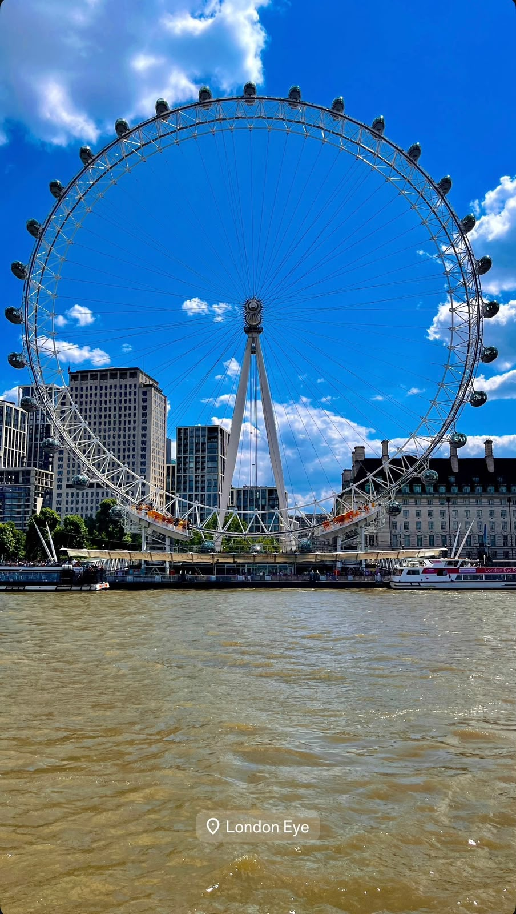
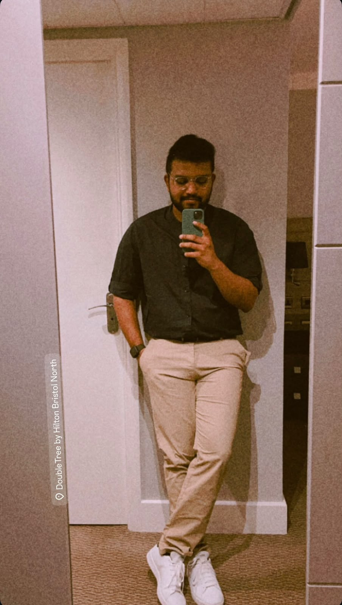
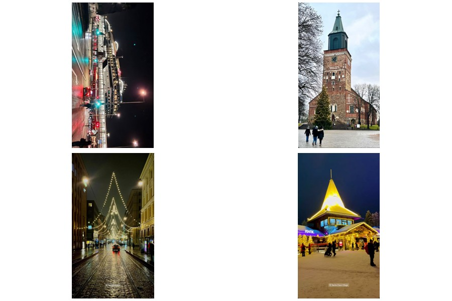
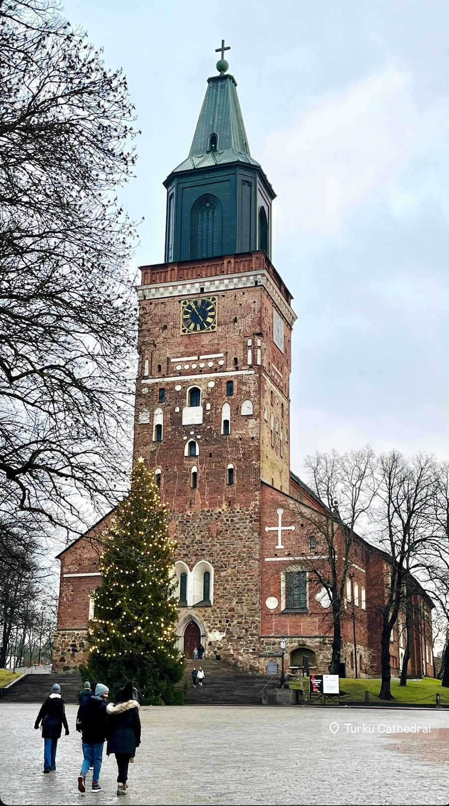

MY PHOTOSUNITED KINGDOM · WORK + FAMILY
From RWE to London family time.
Part work trip, part family visit. I travelled to Bristol for an RWE offsite event, then headed to London to spend time with my cousins. A nice reminder that a work trip can have a very different second chapter.
NETHERLANDS · FRIENDS
Amsterdam & Rotterdam.
A trip with friends to explore two very different sides of the Netherlands — Amsterdam's canals and energy, and Rotterdam's modern architecture and port-city character.
BELGIUM · FRIENDS
Brussels, with good company.
Another friends' trip, this time to Brussels. I explored the city around the Mont des Arts and its historic centre — short, easy to reach from Germany, and exactly the kind of European detour that makes a weekend feel much longer.
FRANCE · FIRST TRIP + FRIENDSHIP
My first trip after arriving in Germany.
France was my first proper trip after coming to Germany — starting with Paris, and later returning to meet a friend in Lyon. It was one of the first moments when Germany started to feel like a base rather than simply a place I had moved to.
SPAIN · FIRST SOLO TRIP
Palma — my first solo trip.
Spain was a milestone: my first solo trip. I went to Palma and discovered how different a place feels when every decision — where to go, when to leave, what to eat — is entirely yours.
SWEDEN · FRIENDS
Stockholm, explored together.
A friends' trip to Stockholm — wandering through the city, taking in the waterfront and discovering Scandinavia together.


MY PHOTOSFINLAND · CRUISE + WINTER
From Sweden to Santa Claus Village.
We took a cruise from Sweden to Turku, then continued north to Rovaniemi and Santa Claus Village. One of those trips where the journey itself was almost as memorable as the destination.
CZECHIA · FIRST LONG TRIP
Prague — the first big trip with friends.
After coming to Germany, Prague became my first long trip with friends. It set the pattern for a lot of what came afterwards: good people, a new city, and a packed itinerary.
ITALY · COAST + CITIES
Bari to Rome, with the Amalfi Coast in between.
With friends, I travelled through Bari, Naples, the Amalfi Coast, Positano and Rome. Food, coastlines, old cities and a lot of moving around — essentially everything you want from an Italian adventure.
SWITZERLAND · ALPS
Bern, Interlaken, Grindelwald & Lauterbrunnen.
Another trip with friends, this time into the Alps. Bern, Interlaken, Grindelwald and Lauterbrunnen delivered exactly what Switzerland promises: dramatic mountains, lakes and views that make you stop walking for a minute.
OMAN · HOME
A place that is part of the story, not just the map.
Oman is more than a destination in my travel list. It is one of the places that shaped my story and perspective long before Europe became part of it.
 MY PHOTO
MY PHOTOINDIA · ROOTS
Where a lot of the story started.
India is one of the places that continues to anchor my story and experiences. It also connects directly to one of my most unexpected travel stories — Indonesia.
INDONESIA · EARNED TRIP
A trip I won.
This one came with a very different reason for travelling. I went to Indonesia with my BYJU'S colleagues after ranking among the top 25 BDAs in India for highest sales. It remains one of those trips where the destination was also a reward for the work that came before it.
 MY PHOTO
MY PHOTOGERMANY · STUDY + LIFE
The place that became a new base.
Germany started with a move for my studies and became a much bigger chapter — friendships, work, travel and the everyday life built around them.